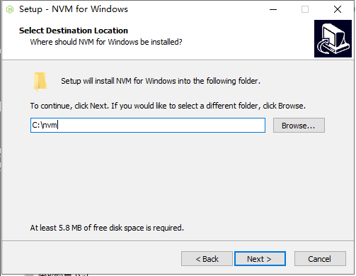
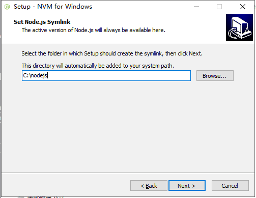

nvm 下载安装 （ Window环境 ）
注意：
安装nvm前，记得先把本地的nodejs卸载了，和删除相关环境变量，还有坑爹的.npmrc
第一次安装默认到底，减少后面环境出错的几率
安装 记得先关闭360等杀毒软件(会误报病毒)
下载文件名为 nvm-setup.zip 的链接
先选择要安装的目录,注意路径中不要有空格和中文字符

选择要存放nodejs的目录

设置淘宝镜像 去到你的nvm安装目录(例如这里是c:/nvm)，打开settings.txt的文本文件， 增加两行
node_mirror: http://npm.taobao.org/mirrors/node/
npm_mirror: https://npm.taobao.org/mirrors/npm/
安装nodejs
nvm install 7.7.3 #安装7.7.3
nvm use 7.7.3 #切换7.7.3版本
常用命令
nvm ls //列举出所有已经安装的node版本
nvm install 7.7.3 //安装7.7.3版本的nodejs
nvm use 7.7.3 //切换nodejs版本为7.7.3
nvm uninstall 7.7.3 //卸载7.7.3版本的nodejs
正常来说可以使用 npm
注意: 如果npm安装完后，出现不是内部命令，注意查看环境变量Path是否有包含nodejs目录，还有就是 nvm 安装10.10.0版本后的 node 不带 npm 模块。。。。
发现使用 nvm 安装 10.10.0 版本以上的 node 不带 npm 模块，导致无法找到 npm 命令
- 解决方案 ： 独立 npm 目录，多个 node 版本共享依赖
如果发现npm命令无法安装，或全局命令找不到
- 全局搜索.npmrc并删除,这个文件是记录了之前的
cache和prefix的记录。就是它搞得鬼，通常是放在C:\Users（用户）\你的用户名.npmrc
在VSCode中如何切换node版本
- 我在命令行里用nvm切换了node的版本：
nvm use v8.11.1，重启VSCode之后，本想着VSCode使用的node版本也会跟着一起改变，但是事与愿违，VSCode的版本依然是原来的 6.10.1。 需要调用下面命令，表示node的默认启动版本：nvm alias default v8.11.1然后VSCode的node版本才会跟着一起变。